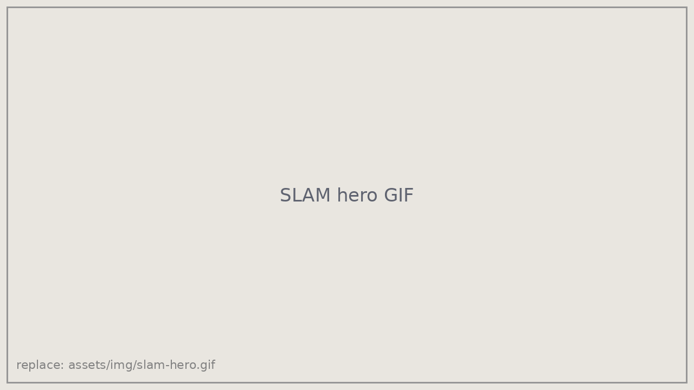
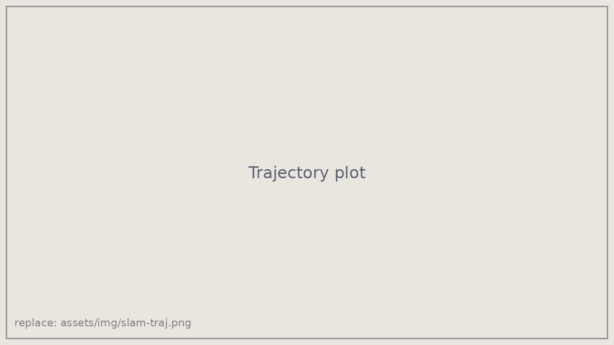
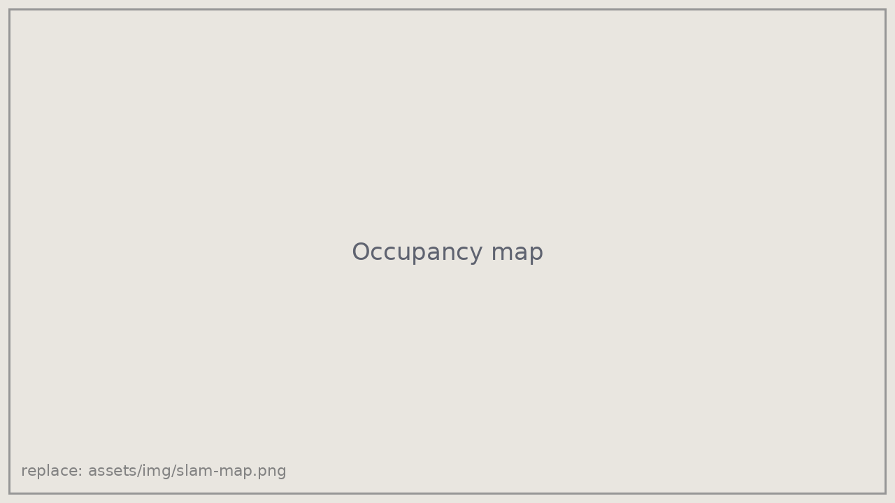

LiDAR–IMU SLAM
[Course or context, e.g. "Course project, UC San Diego, 2025"]

Problem
Estimate a ground robot's trajectory and a map of its surroundings using only onboard IMU and LiDAR data.
Approach
- Fused IMU and LiDAR measurements for odometry.
- Aligned consecutive scans with the Kabsch algorithm to refine pose estimates.
- Built occupancy grid maps of obstacles from the estimated trajectory.
- [Loop closure or pose-graph optimization, if you did it]
Results

